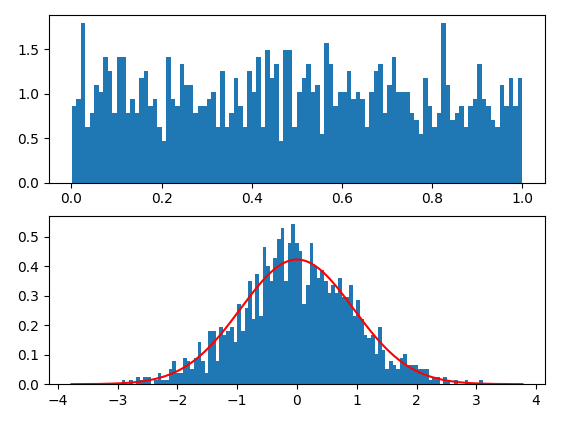

使用神经网络进行分布变换
使用神经网络进行分布变换
过去的文章采样：从均匀分布采样、正太分布采样到MCMC提及过分布变换，即从一个分布变换到另外一个分布，例如从均匀分布变换到正太分布。不过还真没有尝试过直接使用神经网络进行分布变换机器应用。今天这里进行一个简单的尝试和实践。
分布变换
假设有神经网络$f$，分布变换要做的事情是把从满足某一分布的数据$X$，变换为数据$Y$，
使其满足目标分布。
一个具体的例子，假如有数据$[X_{1}, X_{2}, \dots, X_{n}]$独立地采样字均匀分布，神经网络$f$负责变换为$[Y_{1}, Y_{2}, \dots, Y_{n}]$使其满足正太分布。
均值估计，
方差的无偏估计，
通过KL散度来评估与标准正太分布的差距，计算KL散度，
因此有，
上式作为loss参与神经网络的训练，主导参数的优化方向。
更一般的形式，
可以用来控制生成的正太分布的形状。
拉普拉斯分布的概率密度，
均值和方差分别为$\mu, 2b^{2}$。
实验
上述方法最关键是的KL散度这一层的实现，
1 | class KLLossLayer(tf.keras.layers.Layer): |
模型十分简单，
1 | inputs = tf.keras.layers.Input(shape=(hdims,)) |
变换结果，

上图红线是正太分布概率密度曲线，蓝色部分是变换结果。可以看到效果还是不错的。
实现代码见Github。
参考
[1] http://www.allisons.org/ll/MML/KL/Normal/
[2] https://en.wikipedia.org/wiki/Normal_distribution
转载请包括本文地址：https://allenwind.github.io/blog/12982
更多文章请参考：https://allenwind.github.io/blog/archives/